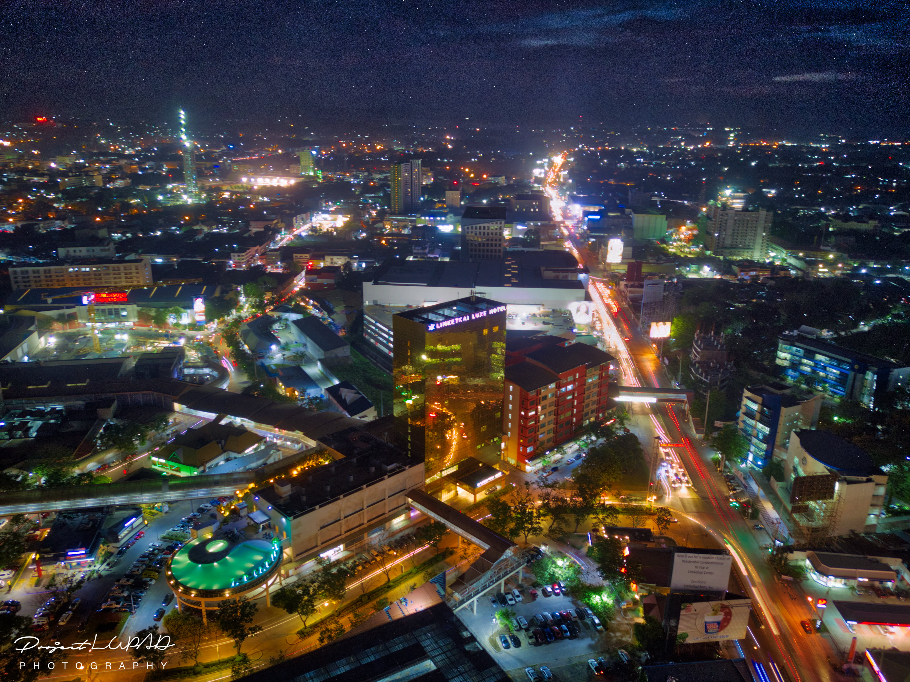

CAGAYAN DE ORO
Hailed as the “White Water Rafting Capital of the Philippines”, Cagayan De Oro is a haven of outdoor activities that adventure-seeking tourists would love to go to!
From its signature extreme sports river rafting and tubing, kayaking, canoeing, and snorkeling to golf courses, watersports activities, and exciting zipline and aerial adventure parks, you’ll surely get all the adrenaline in your body pumping when you visit CDO!